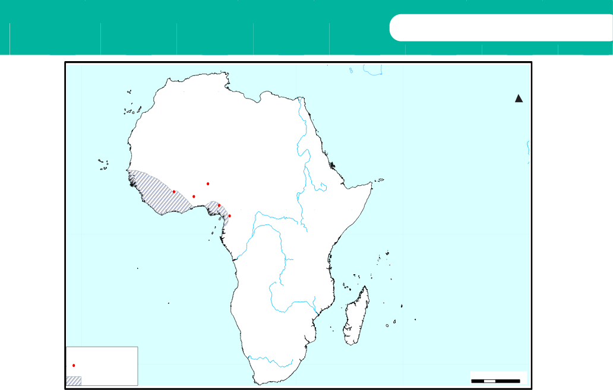

Figure 7.3: Forest States
Asante Kingdom
The Asante Kingdom was founded by the Oyoko people, one of the Akan clans, in the 17th century. The Oyoko first founded five small chiefdoms which later on united into one powerful kingdom of Asante. Those chiefdoms were Kumasi, Nsuta, Kokofu, Bwekai, and Dwaben. By 1670, Kumasi was the greatest and the most powerful kingdom. Obiri Yeboa was the first ruler of the Asante Kingdom. He made Kumasi the unifying centre of the Asante Kingdom. He also made Kumasi the capital of the kingdom. The title of the king of the Asante Kingdom was Asantehene.
Factors for the rise of the Asante Kingdom
Factors for the rise of the Forest Zone states were not different from those of the other areas. The following were the reasons for the rise of the Asante Kingdom:
Soil fertility: The Asante Kingdom evolved from an area that was endowed with soil fertility. Soil fertility supported agriculture, which was the main economic activity in the kingdom. The development of agriculture ensured the availability of sufficient food for the people, rulers, and soldiers. The Asante people cultivated crops such as grains and palm.